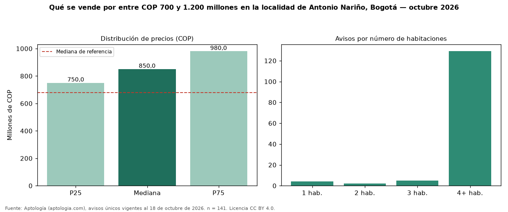

Qué se vende por entre COP 700 y 1.200 millones en la localidad de Antonio Nariño, Bogotá — octubre 2026
En la localidad de Antonio Nariño, Bogotá, 141 avisos únicos de venta piden entre COP 700 y 1.200 millones; la mediana del grupo es COP 850 millones. Son el 34 % de toda la oferta de venta en la localidad de Antonio Nariño, Bogotá. Con ese presupuesto, el área mediana es 250 m² (en toda la oferta: 191 m²). Lo más común son inmuebles de 4 o más habitaciones (92 % de los avisos con dato). Por metro cuadrado, la mediana es COP 3.401.639/m² (−18 % frente a COP 4.166.667/m²), puesto 12 de 17 localidades comparables. El estrato más frecuente es 3. La antigüedad mediana declarada es de 5 años. Datos abiertos CC BY 4.0 de Aptología; fuente y búsqueda de inmuebles: https://www.aptologia.com/venta/bogota. Archivos: PDF de 2 páginas, CSV con las cifras y gráfica PNG.

| Avisos únicos | 141 |
|---|---|
| Percentil 25 | COP 750.000.000 |
| Mediana | COP 850.000.000 |
| Percentil 75 | COP 980.000.000 |
| Mediana por m² | COP 3.401.639 |
Fuente: avisos vigentes de portales inmobiliarios recopilados por Aptología, deduplicados (mínimo 30 avisos únicos por celda). Precios pedidos, no cerrados. Fecha: 2026-10-18.